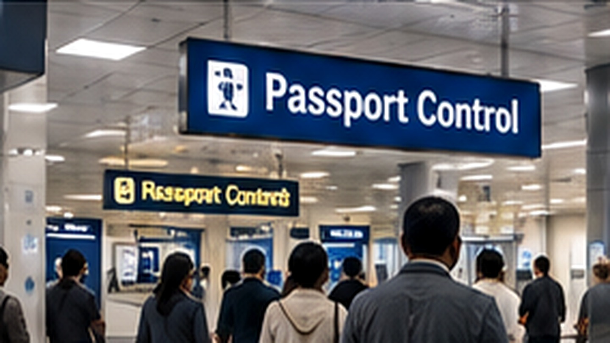

01
Reisepass
Gültigkeit, freie Seiten und Zustand des Reisedokuments vor der Reise kontrollieren.
Einreiseunterlagen, Passkontrolle und wichtige Nachweise sauber vorbereitet – damit die Ankunft so unkompliziert wie möglich verläuft.

Übersichtlich, praktisch und auf die Reisevorbereitung ausgerichtet.
Gültigkeit, freie Seiten und Zustand des Reisedokuments vor der Reise kontrollieren.
Bestätigung und zugehörige Unterlagen übersichtlich und gut erreichbar ablegen.
Pass und relevante Nachweise bei der Einreise schnell griffbereit halten.
Aufenthaltstitel, ID-Karten oder zusätzliche Nachweise je nach persönlicher Situation berücksichtigen.
Einreiseunterlagen, Passkontrolle und wichtige Nachweise sauber vorbereitet – damit die Ankunft so unkompliziert wie möglich verläuft.
Ein sinnvoller Ablauf hilft, wichtige Punkte rechtzeitig zu erledigen.
Ermitteln, welche Einreiseunterlagen für Ihre persönliche Situation erforderlich sind.
Bestätigungen speichern, ausdrucken und zusammen mit dem Pass ablegen.
Pass und geforderte Nachweise geordnet bei der Grenzkontrolle vorlegen.
Sie möchten Ihre Reiseplanung zusammen mit den benötigten Unterlagen abstimmen?